Мавзу: Космо ва аэросуратларни дастурий таъминотда тарнсформация қилиш ва масштабга келтириш
Reja.
1. Kosmo va aero suratlarni yuklab olish
2. Kosmo va aero suratlarni fazoviy bog`lash
3. Kosmo va aero suratlarni transformatsiya qilish
SAS. Planeta dasturi yuklanadi va loyiha xududi tanlanadi. (internet tarmog`iga bog`langan
holda)
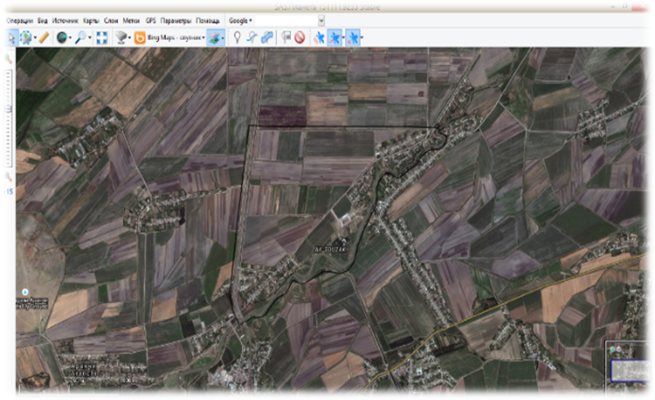
“Operastii s vыdelennoy oblastyu” menyusidan “Poligonalnaya oblast” qatori tanlanadi
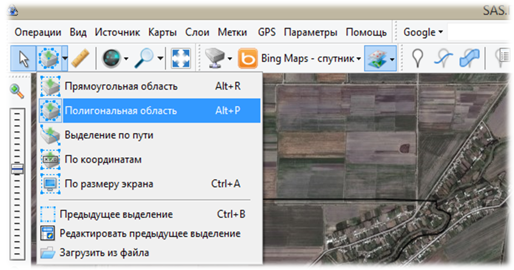
Natijada “operastii s vыdelennoy oblastyu” darchasi hosil bo’lib, xudud belgilanib olinadi
va “ptichka” belgisi bosiladi
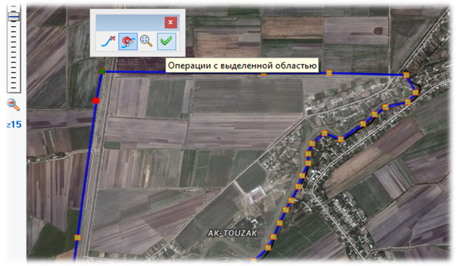
“Operastii s vыdelennoy oblastyu” darchasi hosil bo’ladi va “Zagruzit” bandidan “Masshtabы”
ustunidagi talabga ko’ra masshtab tanlanadi va “Nachat” tugmachasi bosiladi
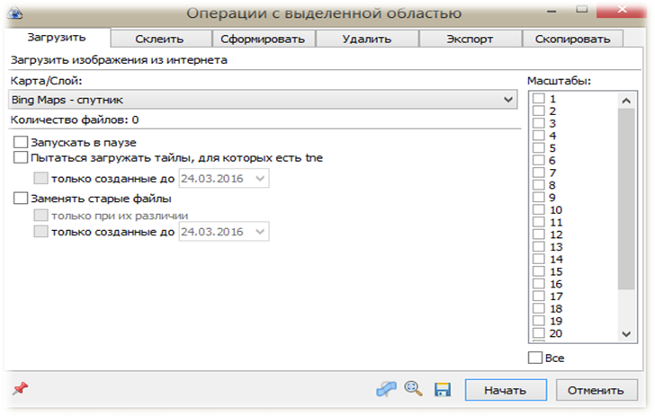
Xudud yuklab olingach “Vixod” tugmachasi bosiladi. “Ctrl+B” tugmachasi bilan birgalikda
bosilib mazkur darcha qaytadan ishchi oynaga chaqiriladi. “Skleit” bandiga o’tiladi va
talabga ko’ra qatorlar to’ldiriladi va “Nachat” tugmachasinin bosish yo’li orqali kompyuter
xotirasiga xudud qirqib olinadi
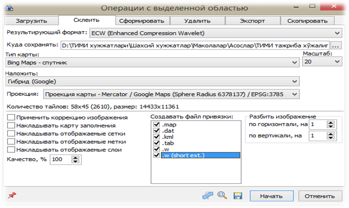
ArcGIS -Hujjatli ma’lumotlari: Ishlab chiqaruvchi – ESRI, Inc. (AQSh). Birinchi versiyani
foydalanishga joriy etish sanasi - 1993 yil, joriy versiya raqami - 3.2. Joriy versiya 1999
yilning dekabr oyidan boshlab ishga tushirilgan va hozirgacha o’rnatilgan dasturlar soni –
350 000 dan ko’proq. So’nggi versiya amal qiladigan platforma - Windows XP, 7, 8, NT, UNIX.
ESRI kompaniyasiga tegishli bo’lgan Arc Gis dasturida geografik ma’lumotlar bazasini
yaratish uchun mazkur dasturning Arc Catalog ta’minotidan foydalaniladi. Arc Catalog
ta’minotining ishchi oynasi ochilgach Catalog daraxti yordamida kerakli bo’lgan xotira diski
tanlanib olinadi.
ArcGIS platformasining ArcMap dasturi ishga tushiriladi.
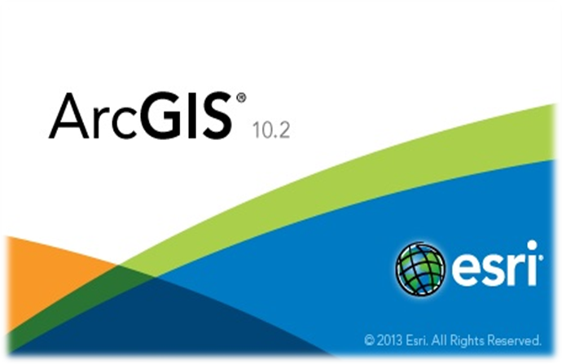
Tezkor menyu qatoridagi “Dobavit dannыe” tugmachasi bosiladi.
Natijada yuzaga kelgan darchadan 2-bosqichda kuzatilgan “SAS. Planeta” dasturi
yordamida yuklangan kosmik surat (fayllar) belgilanadi va “Otkrыt” tugmachasi bosilish
orqali rastr qatlam qatlamlar mundarijasiga yuklanadi.
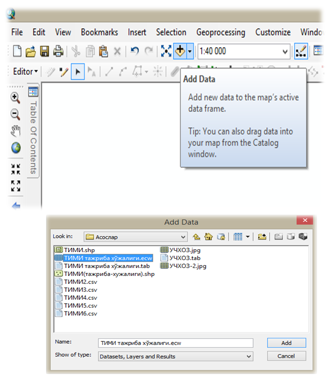
Xudud o’rganiladi va mavzuli qishloq xo’jaligiga oid qatlamlar yaratiladi.
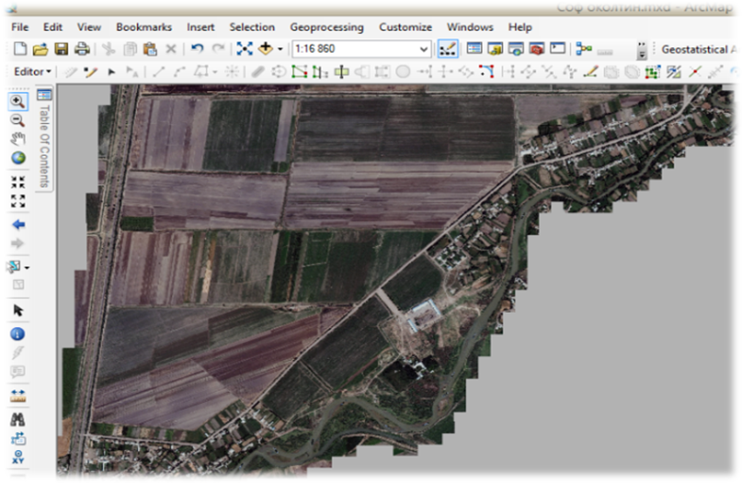
ArcGIS dasturida rastrlar ustida ishlash, ularni fazoviy bog`lash va tahlil qilish kabi
amallarni bajarish imkoniyati ham mavjud bo’lib, bunda mavjud elektron yoki skaner yordamida
qog`oz ko’rinishidagi kartani elektronlashtirilgach, ArcMap yordamida rastr ustida qo’yidagi
ketma-ketlik asosida amallar bajariladi:
ArcMap ishchi oynasi ishga tushiriladi;
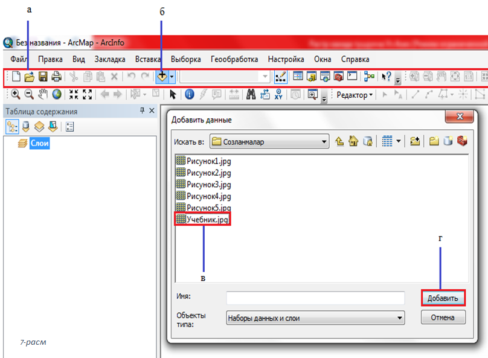
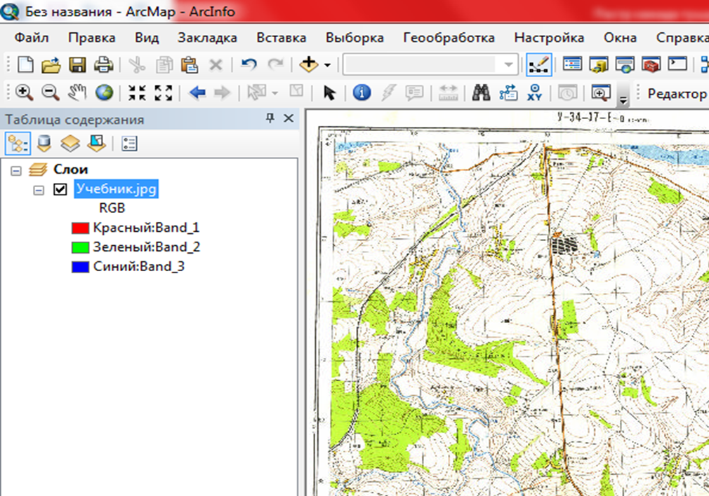
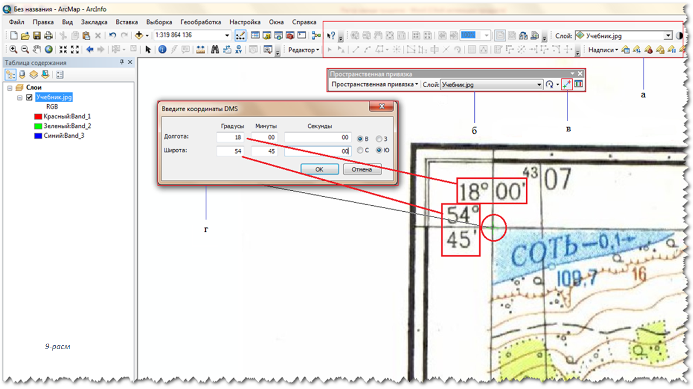
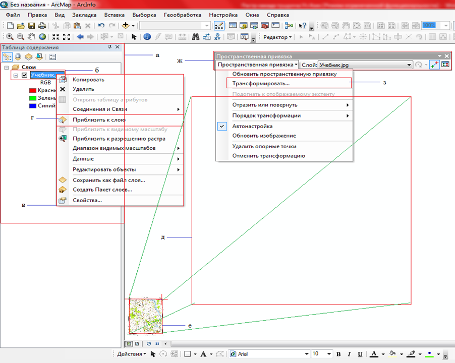